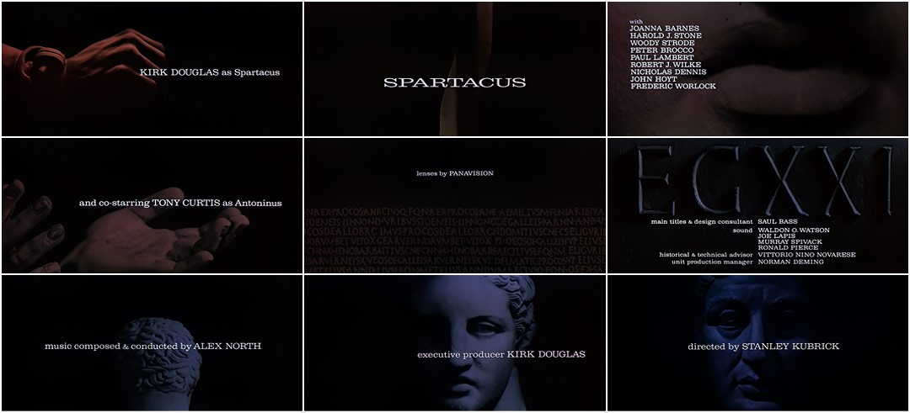

Designer Essay
Why is Saul Bass considered the face behind the cinematic change of movie title sequences?
Graphic designer Saul Bass became best known for his film posters, record albums, company logos and most importantly his revolutionary unique title sequences which rose him to international status from the 1950’s for films such as Psycho and Goodfellas. So how did he achieve this? In this essay I want to investigate and learn more about this legendary designer.

To understand the development of title sequences I thought it is important to briefly look at what came before Saul Bass first title sequence, for the film ‘The man with the Golden Arm[1955]. I discovered that the first examples of title sequences can be found in silent films of the 1920’s. As the films were silent title cards where important in helping the audience understand the story of the film the main title of D.W Griffith ‘Intolerance’ 1916 is an example of this, as it provides the viewer information that although it is clear it is only static. The advantage of all of these title heads led to the emergence of typography being more widely used creatively in title sequences by movie film makers. However, before the Second World War movie credits primarily consisted of a studio logo followed by a series of title cards and all set to music which lacklustre and creativity.
With the emergence of modernism, film making flourished, but it was not until graphic designers such as Saul Bass, that transformations in movie title sequences started to evolve. He realised that opening credits needed more to engage the audience than just listing the names of the cast and crew, so over time he created a succession of designs that would help to establish the mood and the feel of the film before the opening scene.
Author Julia May described Bass as''A great draftsman and visual story teller, Saul Bass ran the gamut of techniques for his title sequences: montage, live action, cut out paper, animation, typography that was used creatively to illustrate the genre of a film''
With this new inventive style Bass reputation grew and he was sought after by Hollywood film makers to create the movie title sequence for some of the greatest films of those periods such as the Man with the Golden Arm, North by Northwest, Psycho, and Spartacus.
Another advantage was that he was an acclaimed graphic designer for several years before going to work in Hollywood and being an outsider he was not afraid to be innovative and try out new ideas. He had a great imagination and his designs were memorable to a film. His titles where not just unimaginative title cards but rather central to the film as a whole. When his work opened a film the film truly started. In some cases like the film ‘Vertigo’ it was like a film within a film. His graphic introduction with a combination of images, music and text set the tone for the film and got the audience engaged from the start.
Furthermore, to understand why Saul Bass is considered the face behind the cinematic change of movie title sequences, I think it is important to look at some examples of the films that he designed title sequences to see exactly how he did this.
In an interview with Art and Science Bass quoted''I felt for some time that audience involvement with a film should begin with its first frame''

Saul Bass first title sequence, for the film ‘The man with the Golden Arm [1955] brought him his first critical appraisal. In 1953 Bass started to work with film director Otto Preminger designing posters for his films and then was later was asked to create the title sequence for ‘The Man with the Golden Arm’ .The film was about drug addiction. His simple use of bold white lines to represent a fractured arm was a metaphor for a broken person and it could be described as direct and strong visual clip preparing the audience of what they were about to view. Along with powerful and exciting jazz music by composer Elmer Berstein Bass designed the stark white lines to pop into the screen along with the beat of the music and then include the names of the cast and crew. It was simplistic but created a feeling of curiosity. The symbolic motif of a fractured arm in the final still created a powerful image that reflected an eerie mood of darkness and despair. To create more anticipation the director Preminger requested all cinemas not to start the first reel of the film until the curtains where pulled back. This furthered heighten the drama of the opening title. Bass had become a designer of film and had created a new style of title sequence that had never been produced before. Overnight Bass’s creative talent where in demand and he moved on to work with many other directors such as Martin Scorsese.

North by Northwest [1959] was one of the first projects Bass had with the director Alfred Hitchcock. Like most of his title sequences Bass tried to tell the story of the film in a metaphorical way. He wanted the mood and the story of the film to be reflected in his sequences and this film North by Northwest is a good example of this. In the 1950’s this way of creating film sequences was revolutionary but Bass did another thing different with this film. In the sequence he used the title of the film to immediately engage the audience. Bass established the theme of the story in tone and design. The intersecting lines at the first stage of the sequence representing the crossroads in life hence the image in the later part of the sequence of downtown streets in Manhattan. In the title sequence he uses Sans Serif typography in blocks rising and falling in vertical columns. An interesting acclaim to his graphic design background. There are three parts to this sequence graphic, graphic and visual and visual. The sequence was slick, minimal and sophisticated which had never been seen before in film sequences. Bass has brought the audience on a journey from unreality to reality in a short space of time. North by Northwest has often been considered the first film sequence to use kinetic type and yet again this is another example of how Bass has changed the face of movie sequences.
In the 1960 film Spartacus by director Stanley Kubrick he was hired by Kirk Douglas not only to design the main titles but as design consultant. This gave him the opportunity to be more involved in the creative production of the film.
The title sequence along with music by Alex North portrayed visually the domineering reign of the Roman Empire in that era. The striking images of Roman numeral’s, figurative sculpture, and body parts portrayed against a dark background creating a chiaroscuro effect which was dramatic and projected idea of the brutality of the Romans. The idea was simple but strikingly effective. Bass also helped to design the final battle scene in Spartacus that demonstrated his diversity.
Throughout his career Saul continually experimented with different styles and techniques. Each film project considered thoughtfully as if it was a new design brief that was approached with enthusiasm and close attention to detail. However, Saul had developed a style uniquely associated with his film sequences such as repeated motifs, body parts and grids all distinctive of his work. This could be considered a signature trademark of his methods that made his work instantly recognised as the work of Saul Bass.
One director who had a real affinity for Saul Bass was the film director Martin Scorsese. He worked with Bass for the first time on his film Goodfellas. He had long been an admirer of his work on title sequences and once wrote:
B. Meggs - 6 Chapters in Design page 17''His titles are not simply unimaginative identification tags, as in many films; rather they are integral to the film as a whole. When his work comes up on the screen, the movie itself begins''
Bass was perceptive and understood what the directors wanted. With Goodfellas he was able to create a title sequence that reflected the crazy side of life through speed. He would analyse a film by focusing on the story and the mood of the story so he understood its meaning before he produced the title sequenced. Bass said,
''I want to make beautiful things, even if nobody cares, as opposed to ugly things. That’s my intent.''
At the beginning of this essay my question was, why is Saul Bass considered the face behind the cinematic change of movie title sequences?
There are endless answers to this question. Saul Bass was a realist. He saw films as a form of escapism not just from the first scene but from the moment the cinematographer started the film reel. He was a professional with real passion and talent for graphic design. He was also a designer who was not afraid to take risks and did what he wanted, and not always what the client wanted, as he felt that he knew best.
His title sequences could be described as minimalistic and unique. He was the first graphic designer to invent kinetic typography. He got cinemas to pull the curtains so the audience could fully appreciate the title sequence. He was the forerunner in showing the theme, tone and mood of a film through a tile sequence. He was the first graphic designer and Oscar winning director to create the non-static modernist title sequence. With just 2 -4 minutes film time he had the skills to break down a story into simple visual ideas. This is only a few reasons of how legendary he was in this field of filmmaking.
His influence can be seen in many title sequences since the 1960’s such as ‘The Pink Panther’, ‘Batman’ and in the film sequence of ‘Catch me if you can, by the director Steven Spielberg. It can be compared to bass’ title sequence for the ‘The man with the golden Arm’.

To conclude, I think Saul Bass best describes why he is considered the face behind the cinematic change of movie title sequences and it is all summed up in this quote:
''For the average audience, the credits tell them there’s only three minutes left to eat popcorn. I take this ‘dead’ period and try to do more than simply get rid of names that filmgoers aren’t interested in. I aim to set up the audience for what’s coming; make them expectant.''